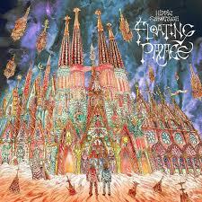
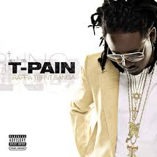

Currently Listing: Floating Palace
Cryptic Captions: Hippie Sabotage... 4:54
Safe Harbor: Hippie Sabotage... 4:59
Immune to Danger: Hippie Sabotage... 3:26
Floating Palace: Hippie Sabotage... 3:30
Summer Highs(Laying in the Flowers) Hippie Sabotage... 3:55
Point of No Return: Hippie Sabotage... 2:43
Distress: Hippie Sabotage... 4:51
Wading Through the Flood: Hippie Sabotage... 4:51
Thinking Irrationally: Hippie Sabotage... 4:18
Hell to Make: Hippie Sabotage... 4:28
Life Happens: Hippie Sabotage... 4:26
Miracle Today: Hippie Sabotage... 2:58
Boardwalk: Hippie Sabotage... 5:58
14 Songs - 57 min

Up Next: Rappa Ternt Sanga (Expanded Edition)
Rappa Ternt Sanga (Intro): T-pain... 1:48
I'm Sprung: T-Pain... 3:51
I'm N Luv(Wit a Stripper): T-Pain (feat. Mike Jones)... 3:59
Studio Luv: T-Pain... 3:37
You Got Me: T-Pain (feat. Akon)... 3:35
Let's Get It On: T-Pain... 3:52
Como Estas: T-Pain (feat. Taino)... 3:34
Have It Interlude: T-Pain... 3:16
Fly Away: T-Pain... 3:55
Going Thru A lot:
T-Pain(feat. Bone Crusher & MempHitz Wright)... 4:28
Say It: T-Pain... 4:00
Dance Floor: T-Pain (feat. Tay Dizm)... 5:09
Ur Not The Same: T-Pain (feat. Akon)... 4:17
My Place: T-Pain... 3:39
Blow Ya Mind: T-Pain... 4:16
Ridge Road: T-Pain... 4:34
I'm Hi: T-Pain (feat. Styles P)... 4:32
I'm Sprung 2:
T-Pain (feat. YoungBloodZ & Trick Daddy)... 4:19
Real good Muzik: T-Pain... 3:53
I'm Sprung: T-Pain (feat. Dizzee Rascal)- (Uk Remix)... 4:34
After That: Tim
Peace Of Mind: Avicii (feat. Vargas & Lagola)... 3:00
Heaven: Avicii... 4:37
SOS: Avicii (feat. Aloe Blacc)... 2:37
Tough Love: Avicii (feat. Agnes, Vargas & Lagola)... 3:11
Bad Reputation: Avicii (feat. Joe Janiak)... 3:25
Ain't A Thing: Avicii (feat. Bonn)... 3:03
Hold The Line: Avicii (feat. A R I Z O N A)... 2:51
Freak: Avicii (feat. Bonn)... 2:59
Excuse Me Sir: Avicii (feat. Vargas & Lagola)... 3:07
Heart Upon My Sleeve:
Avicii (feat. Imagine Dragons)... 4:14
Never Leave Me: Avicii (feat. Joe Janiak)... 2:51
Fades Away: Avicii (feat. Noonie Bao)... 2:58